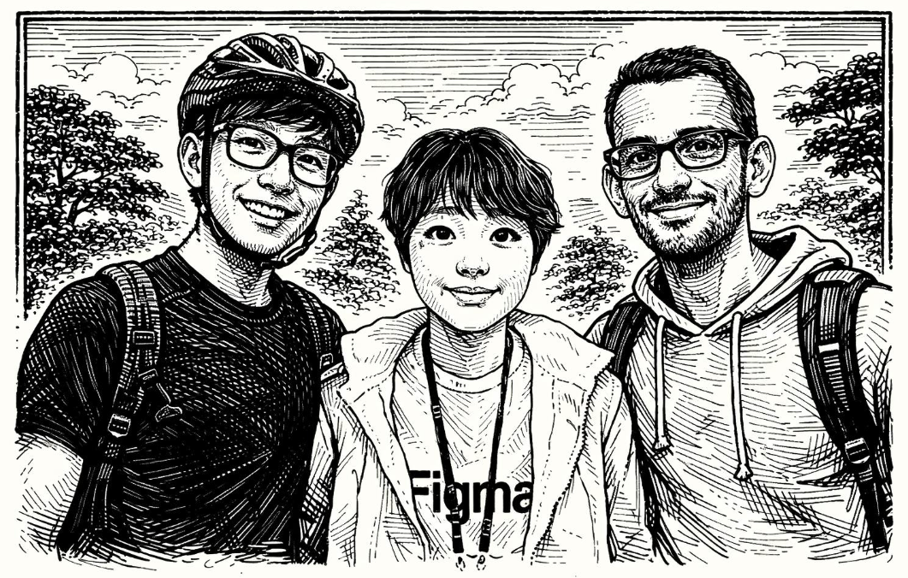

Paradigm Shift
The Structural Shift: when EI intensity left the annual report — and rewrote how people shop, choose a place to live, and demand justice.
01 · Daily life
EI on the grocery receipt
Retailers print a simple EI Intensity — carbon, water, land per dollar. Families track it like a monthly budget. Pride for some; pressure for others when the cheapest food scores worst.
“I want the low-EI rice. When it costs twice as much, what choice do I have?”
Jamal · Detroit
02 · Place & power
Where rankings move people
Provincial and state decoupling indices now sway jobs and housing. Employers open where scores climb. Listings advertise “low-EI living.” Regions that powered the old economy demand credit for cleanup — not only for clean baselines.
Rankings reward transition. Workers still ask who pays for the bridge.
EI Progress Index · 2040
03 · Global movements
Justice or green colonialism?
Movements say scores were captured: capital flight from the Global South, export-blind national ranks, intensity wins that hide lost jobs.
- Count history & consumption, not only local stacks
- Protect workers in transition
- Frontline voices define “impact”
04 · Origin · 2026
How Climatico began
When climate tools still meant consultants and spreadsheets, three founders built EI intensity tracking for startups — emissions per dollar of revenue, from day one.
